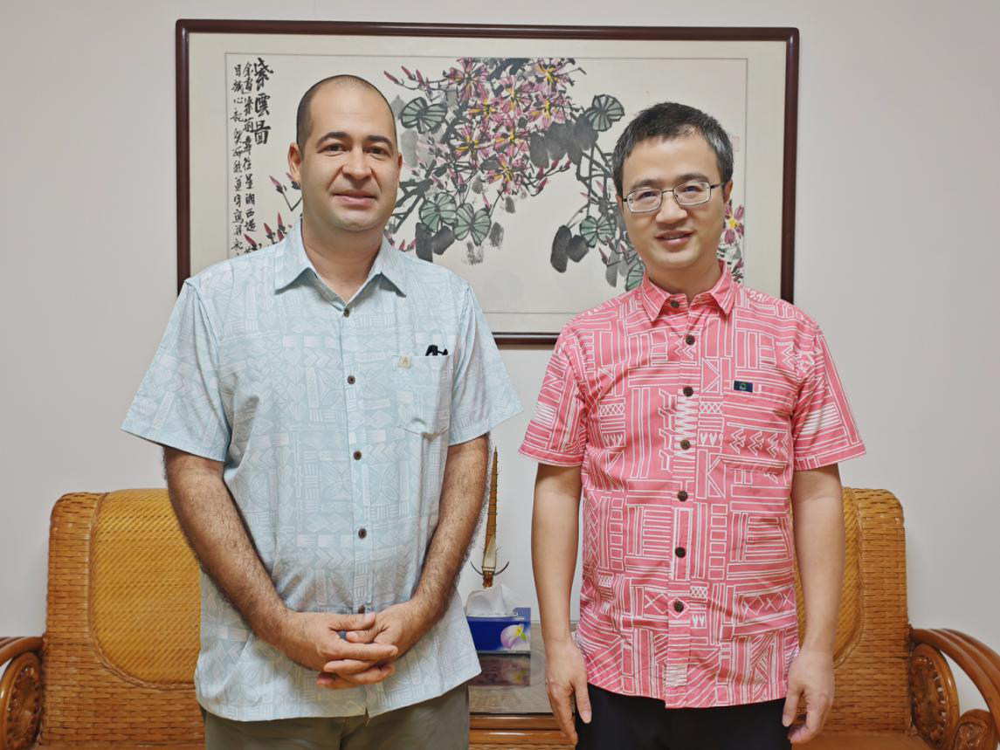

Last Week in the Pacific: Cuba and China’s Kiribati Rendezvous
Zhou Limin—the second PRC ambassador to Kiribati since Beijing re-established ties—left his post in January and took up a new assignment as ambassador to Sweden in March.
Zhou has served in the Ministry of Foreign Affairs since 1990, except for a two-year stint as deputy mayor of Zhangjiakou. He then served as Deputy Director in the Ministry’s Consular Department before a posting in Sydney.
A forthcoming TAFI report on China’s Five-Year-Plan promotion in the Pacific will examine Zhou’s ideological record, shedding light on his move to Sweden.
Summary of PRC Activity
Chinese embassies delivered disaster relief and humanitarian assistance in Micronesia and the Solomon Islands last week. Guizhou Province stepped up as a sub-national donor to the Solomons. Ambassadors across the region met with senior officials, and in Kiribati, the PRC ambassador met with his Cuban counterpart—a notable diplomatic pairing in the Pacific.
This Week’s Big Themes:
High-Level Meetings
Across the region, Chinese ambassadors held multiple meetings with senior officials in their host countries. In Nauru, Ambassador Lyu Jin met with Stephen Felix, Speaker of Parliament and President of the Olympic Committee. The two men discussed phosphate mining and construction of the Nauru Sports Center—a topic Lyu also raised with Nauru’s Sports Minister earlier this month. Lyu met separately with the president of a Chinese shipping company to discuss commercial prospects in Nauru. In Papua New Guinea, Ambassador Yang Xiaoguang met with Prime Minister James Marape. In Kiribati, the Chargé d’Affaires met with the Cuban Ambassador to Kiribati Néstor Torres Olivera to discuss PRC-Cuba relations. Torres also met with his Chinese counterpart in Nauru during a visit to Yaren in March—the second instance this monitor has tracked of Cuban diplomatic activity across the Pacific.
Supporting Events
- Nauru: Meeting with Speaker Felix
- Nauru: Meeting with Chinese shipping company
- PNG: Meeting with PM Marape
- Kiribati: Meeting with Cuban Ambassador Torres
Storm Chasers

After Cyclone Sinlaku struck Guam, the Commonwealth of the Northern Marianas, and Chuuk state in the Federated States of Micronesia, China’s embassy in the FSM launched several disaster relief efforts. The embassy dispatched the Chinese medical team to Chuuk on April 19 with support from the FSM Ministry of Health, donated clothing through the Pohnpei Women’s Council, and sent representatives to the “Health Partners Meeting” to coordinate relief contributions. Cyclone Maila also made landfall at the start of the month in Papua New Guinea and the Solomon Islands. In the Solomons, the Chinese embassy delivered $63,000 in humanitarian assistance. Ambassador Cai Weiming met with the Head of the UN OCHA Office of the Pacific Islands to discuss joint humanitarian relief efforts.
Supporting Events
- FSM: Disaster relief donation
- FSM: Medical team dispatched to Chuuk State
- FSM: Ambassador Wu Wei attends “Health Partners Meeting”
- Solomon Islands: Disaster relief donation
- Solomon Islands: Meeting with UN OCHA Office of the Pacific
Mushrooms, Meds, and Micro-donations
In Fiji, a China Aid program donated pre-made mushroom substrate bags made from Juncao, followed by a Juncao Technology Awareness Session with the President of the Fiji Mushroom Association. In Tonga, Ambassador Liu Weimin attended a handover of China Aid medical supplies to combat a recent dengue outbreak. In Vanuatu, the embassy donated 100 footballs, 50 futsals, and live-streaming media equipment to the Port Vila Football Association. In the FSM, Ambassador Wu signed Minutes of Discussion with Transportation Secretary Carlson D. Apis to advance the China Aid road upgrading project in Yap.
In the Solomon Islands, beyond cyclone relief donations, the Chinese embassy donated an engine and boat to the East Central Guadalcanal Constituency. Guizhou Province, in China’s southwest, donated two equipped boats to the Makira-Ulawa Constituency. Guizhou officials attending the handover also met with the Solomon Islands Ministry of Agriculture and Livestock Development to discuss applying Guizhou’s agricultural experience in mountainous terrains to benefit the Solomons.
Supporting Events
- Fiji: Juncao donation
- Fiji: Juncao awareness session
- Tonga: Medical equipment donation
- Vanuatu: Sports equipment donation
- FSM: Minutes of Discussion for Yap road upgrade
- Solomon Islands: Donation to East Central Guadalcanal Constituency
- Solomon Islands: Donation to Makira-Ulawa Constituency
- Solomon Islands: Guizhou officials meet with MALD
* The PRC Pacific Embassies Monitor provides systematic, open-source tracking of Beijing’s public diplomatic activities across the nine Pacific Island Countries hosting Chinese missions. The monitor captures official embassy social media and website posts, supplemented by local sources, to offer a weekly structured intelligence report that bridges critical information gaps on regional engagement.